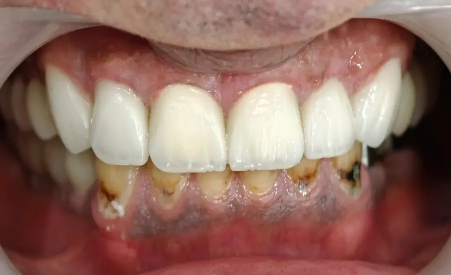

نسخه استخراجشده؛ ترجمه یا تأیید علمی انجام نشده است. وضعیت: captured
برای بیمار افزایش ورتیکال دایمنشن (VD) انجام شده است. فک بالا به طور کامل با رستوریشنهای نهایی بازسازی شده و در فک پایین، خلف هر دو سمت روی ایمپلنت با روکشهای موقت نگه داشته شده. حالا نوبت تعویض این موقتها با روکش نهایی است؛ اما وسط کار، یک محدودیت مالی پیدا شده.

بیمار در ابتدا قصد داشت کل کار را در سطح یک درمان زیبایی و با لابراتوار مربوطه انجام دهد؛ با افزایش نرخها و بالا رفتن هزینهها، توافق شد ادامهی کار با لابراتواری پیش برود که کیفیت کارش خوب است ولی قیمتگذاری زیبایی ندارد. پس لابراتوار سازندهی روکشهای موقت و لابراتوار سازندهی روکشهای نهایی دو مجموعهی متفاوت شدند.
اینجا موقتها یک مرحلهی گذرا نیستند؛ تا لحظهای که کار نهایی بنشیند، تماس خلفی روی همین موقتها ارتفاع تازه را سر جایش نگه میدارد.
روکشهای موقت برداشته میشوند، در سطح فیکسچر اسکن گرفته میشود و کار از ابتدا ساخته میشود؛ بعد از اسکن، موقتها دوباره در جای خود بسته میشوند تا در طول ساخت کار نهایی VD حفظ شود. مزیت: بیمار در هیچ مقطعی بدون ساپورت خلفی نمیماند. مشکل: هزینه؛ لابراتوار جدید اباتمنتهای جدید میسازد و بیمار باید هزینهی اباتمنت را بار دیگر بپردازد، در حالی که اباتمنتهای سالم و آماده در دهانش دارد.
روکش موقت برداشته و از اباتمنت موجود اسکن گرفته میشود تا روکش نهایی روی همان اباتمنت ساخته شود و هزینهی اضافه به بیمار تحمیل نشود. شرط عملی: لابراتوار برای مچ کردن دقیق به خود اباتمنت هم نیاز دارد تا آن را جداگانه اسکن کند، اسکنها را روی هم مرج کند و بعد روکش نهایی را بسازد؛ یعنی اباتمنت باید مدتی از دهان بیمار خارج شود.
اگر این کار برای هر دو سمت به طور همزمان انجام شود، بیمار برای مدتی ساپورت خلفی خود را از دست میدهد؛ VD نگه داشته نمیشود و بار اکلوزالی به قدام منتقل میشود که مستقیماً رستوریشنهای فک بالا را در معرض آسیب قرار میدهد. یعنی برای صرفهجویی در هزینهی اباتمنت، کل کار فک بالا به خطر میافتد.
محدودیتهای مالی بیمار، حتی وقتی وسط درمان پیش میآیند، لزوماً به معنای انتخاب بین «گران و امن» و «ارزان و پرریسک» نیست؛ گاهی با تغییر ترتیب اجرا میشود مزیت هر دو را نگه داشت.